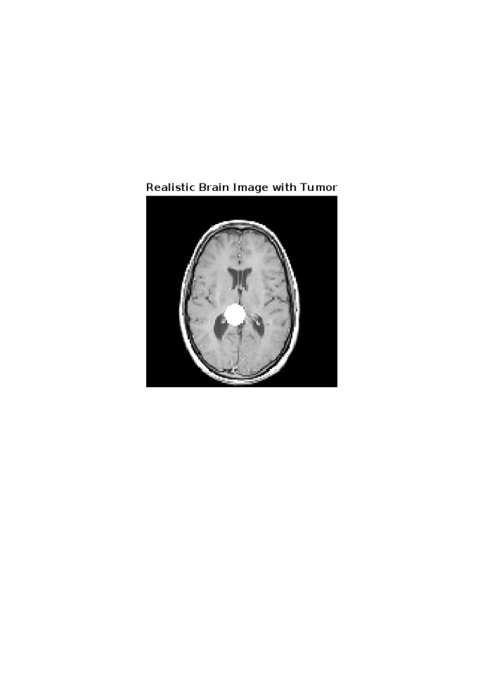

Structural Brain Image and Its Generation Using MATLAB
A structural brain image is a detailed representation of the brain's anatomy, highlighting different tissues, structures, and any possible abnormalities. It is widely used in medical research and diagnostics to analyze brain morphology, detect tumors, or plan surgeries.
Generating a Structural Brain Image Using MATLAB
To generate a structural brain image in MATLAB, we followed a systematic approach using built-in MRI datasets and image processing techniques. The key steps are as follows:
- 1. Loading the MRI Dataset
We utilized MATLAB’s built-in MRI dataset, which contains a series of 2D slices representing different sections of the brain. We extracted a specific slice that provides a clear anatomical structure. - 2. Preprocessing the Image
The extracted slice was converted into grayscale using MATLAB’s mat2gray function to normalize intensity values. Noise reduction techniques (if required) were applied to enhance clarity. - 3. Adding a Tumor (Synthetic Anomaly)
To simulate a real-world medical case, we created a synthetic tumor using mathematical functions like meshgrid. The tumor was designed as a circular bright spot within the brain image, mimicking abnormal growth. - 4. Displaying the Structural Image
Finally, the processed image was displayed using imshow(), allowing us to visualize the brain’s structure along with the simulated tumor.
MATLAB Code to Generate the Structural Brain Image
% Load a sample MRI image from MATLAB's built-in dataset
load mri; % Built-in MRI data
D = squeeze(D); % Convert the 4D data to 3D
% Extract one slice of the brain from the dataset
brainImage = mat2gray(D(:,:,15)); % Slice 15 (choose a slice with a clear brain)
% Add a synthetic tumor to the brain image
[xGrid, yGrid] = meshgrid(1:size(brainImage, 2), 1:size(brainImage, 1));
tumor = ((xGrid - 60).^2 + (yGrid - 80).^2) <= 50; % Circular tumor
brainImage(tumor) = 1; % Bright tumor intensity
% Display the final brain image with the tumor
imshow(brainImage, []);
title('Realistic Brain Image with Tumor');
Visual Representation
